Materials Informatics
& Theory Laboratory
MINT Lab combines theory, computational materials science, and AI-materials to understand emergent properties and accelerate the discovery of next-generation magnetic metals, thermoelectric semiconductors, and 2D materials.

전자-격자-자성의 미시적 상호작용 분석을 바탕으로 자성금속, 열전도반도체, 2D소재의 물성에 대한 물리학적 근원 이해를 AI 가속화 기반 전산재료 연구 수행
Lab Updates
Updates on publications, research, group events, and conferences.
재료정보이론연구실의 최신 출판, 연구, 학회 활동 등 다양한 소식을 확인하세요!
Loading recent news…
Join MINT Lab (재료정보이론연구실)
We are looking for motivated graduate students interested in Computational Materials Science and AI-Materials. If you are passionate about research in related fields, please feel free to contact us via email. 재료정보이론연구실에서는 연구에 열의를 가진 대학원생을 모집하고 있습니다. 본 연구실은 전산재료과학 및 소재인공지능 연구를 중심으로 다양한 연구를 수행하고 있습니다. 관련 분야에 관심이 있고 적극적으로 연구에 참여하고자 하는 학생들의 지원을 환영합니다. 관심 있는 학생은 이메일로 문의해 주시기 바랍니다.